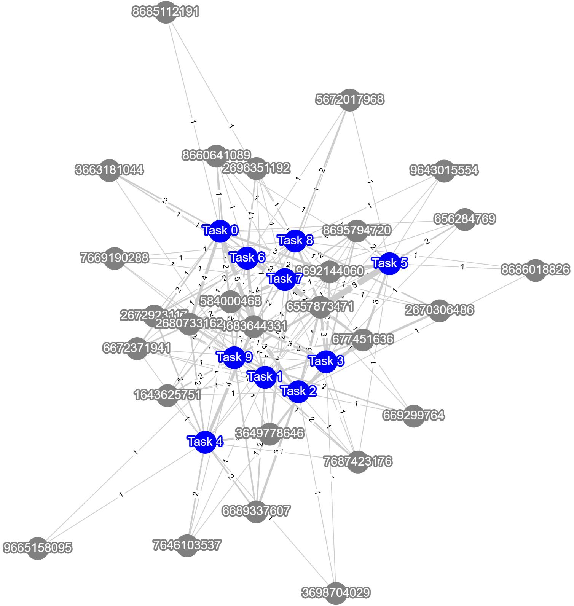
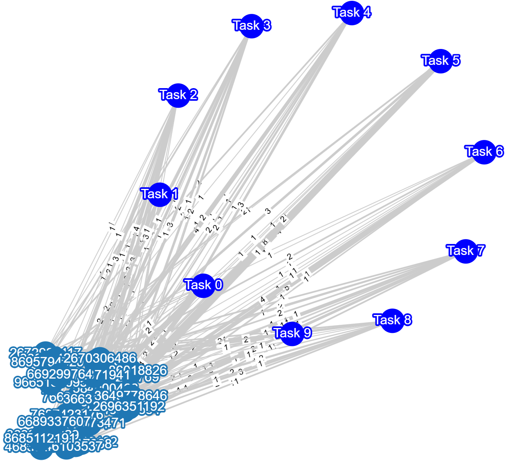

visualization
Tutorial
The visualization module provides network visualization functions for networks at the group or cohort level, enabling users to project heterogeneous interaction networks onto any subset of node types (e.g., students, tasks, behavioral codes). It also includes functions for visualizing significant interaction structure and clustering results.
The module allows for the inclusion of various metadata, such as inferred student clusters or contribution metrics, and provides a web-based interface for interactive visualizations and user engagement.
Currently, the module contains the network_visualization.py file, which includes:
plot_HINA: Visualizes a bipartite network with specified attributes and layout.
plot_bipartite_clusters: Plots bipartite network with specified cluster labels indicated with node colors and positions.
Inputs include:
df: A pandas DataFrame containing network data.
group: A string indicating which group to filter and plot (e.g., ‘All’ for the entire dataset).
attribute_1 and attribute_2: The column names representing two sets of nodes (e.g., students and tasks).
pruning: Boolean or dictionary indicating whether to prune edges using statistical significance testing.
layout: Layout method for node positioning (e.g., ‘spring’, ‘bipartite’, ‘circular’).
NetworkX_kwargs: Additional arguments for NetworkX visualization.
Outputs include:
Visualizations of the bipartite network with or without cluster labels and pruning.
Visualization
This module provides functions for visualizing heterogeneous interaction networks and bipartite community structure.
Function |
Description |
|---|---|
plot_HINA(df, group=’All’, attribute_1=None, attribute_2=None, …) |
Plots a bipartite network visualization with specified attributes and layout. |
Plots bipartite network with specified cluster labels indicated with node colors and positions. |
Reference
Description: Plots a bipartite network visualization with specified attributes and layout.
Parameters:
- df: A pandas DataFrame containing network data.
- group: A string indicating which group to filter and plot (default:
'All'). - attribute_1: The column name for the first node set (e.g.,
'student id'). - attribute_2: The column name for the second node set (e.g.,
'task'). - pruning: Whether to prune edges using significance testing. Can be a boolean or a dictionary with pruning parameters (default:
False). - layout: Layout method for positioning nodes. Options include
'bipartite','spring', and'circular'(default:'spring'). - NetworkX_kwargs: Additional arguments for NetworkX visualization (default:
None).
- Returns:
None: Displays a plot of the bipartite network.
Description: Plots bipartite network with specified cluster labels indicated with node colors and positions.
Parameters:
- G: A bipartite edge set with tuples (node in Set 1, node in Set 2, weight).
- community_labels: A dictionary mapping nodes to their community labels.
- noise_scale: Controls node dispersion around cluster centroids (default:
3). - radius: Controls the radius of the community centers (default:
20). - encode_labels: If
True, encodes each node label as a unique string (default:False). - node_labels: Defines which set of nodes to label (default:
'Set 2'). - edge_labels: Whether to include edge labels (default:
False). - scale_nodes_by_degree: Whether to scale node size by degree (default:
False). - node_scale: Controls the average size of nodes (default:
2000). - node_kwargs: Arguments for `NetworkX` node plotting (default:
{'edgecolors':'black'}). - edge_kwargs: Arguments for `NetworkX` edge plotting (default:
{'edge_color':'black'}).
- Returns:
None: Displays a plot of the bipartite clusters.
Demo
Example Code
This example demonstrates how to visualize a bipartite network, clustered network, and bipartite communities.
Step 1: Import necessary libraries
import pandas as pd
from hina.individual.quantity_diversity import get_bipartite
from hina.mesoscale.clustering import bipartite_communities
from hina.visualization.network_visualization import plot_HINA, plot_bipartite_clusters
Step 2: Load the example dataset
df = pd.read_csv('synthetic_data.csv')
Step 3: Plot the bipartite network of students and tasks in all groups
plot_HINA(df, attribute_1='student id', attribute_2='task', group='All', layout='spring')
Step 4: Plot the bipartite network of students and tasks in group 1
plot_HINA(df, attribute_1='student id', attribute_2='task', group='Group 1', layout='spring')
Step 5: Plot bipartite fixed number of clusters using MDL method
G = get_bipartite(df,'student id','task')
community_labels,cr = bipartite_communities(G, fix_B=5)
plot_bipartite_clusters(G,community_labels, node_labels='Both Sets', edge_labels=True)
Step 6: Plot bipartite clusters inferred using MDL method
G = get_bipartite(df,'student id','task')
community_labels,cr = bipartite_communities(G)
plot_bipartite_clusters(G,community_labels, node_labels='Both Sets', edge_labels=True)
Example Output
{kind=link}
Bipartite network of students and tasks with all groups.

Bipartite network of students and tasks with Groups 1.

Bipartite network of students and tasks with five fixed number of clusters.
{kind=link}
Bipartite network of students and tasks with inferred number of clusters.
Paper Source
If you use this function in your work, please cite: